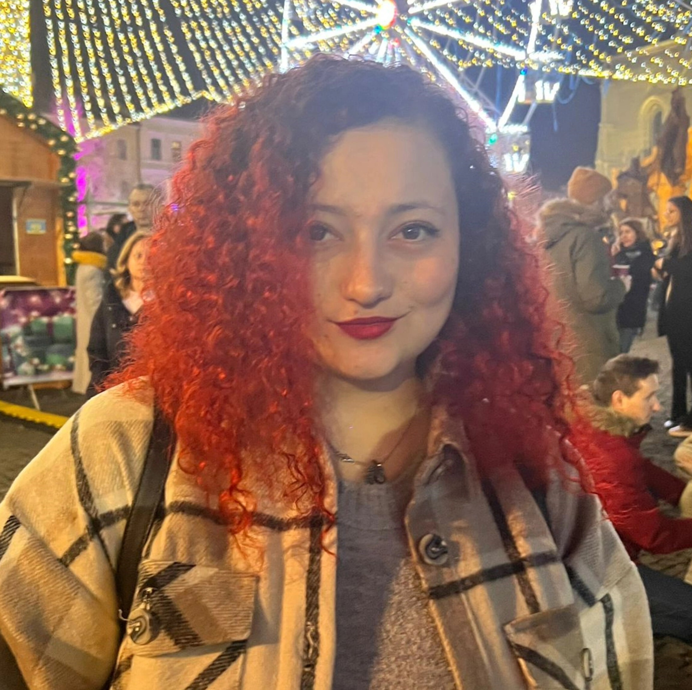

Silvia's portfolio
Professional experience
- Member of the Project Services team, responsible with the set-up and execution of research and activation studies. Until July 2024 I was member of a multi-disciplinary team that is able to manage projects from A to Z, from initial set-up document to preparing client-ready deliverables. From July onwards the teams were role based.
Responsibilities:- Technical implementation of the online surveys, in a efficient and effective way using Decipher.
- Suggest improvements to the clients about the project set-up.
- Offering alternative solutions for the client ideas which couldn't be implemented.
- Support the team where needed.
- Respecting project timelines.
- Utilized Microsoft Excel since the Activity Guides often came in Excel from rather that Word.
...more
Research Platform Administrator - InSites Consulting/Human8
October/2022 - CURRENT - Working remote from Brasov, RomaniaEducation
Mathematics and Informatics
Transilvania University of Brașov, Faculty of Mathematics and Informaticsoctober/2016 – july/2019
Skills
- Good Knowledge of Microsoft Office PACK
- Good knowledge of Outlook, Teams, Skype ...more
Digital skills
About me